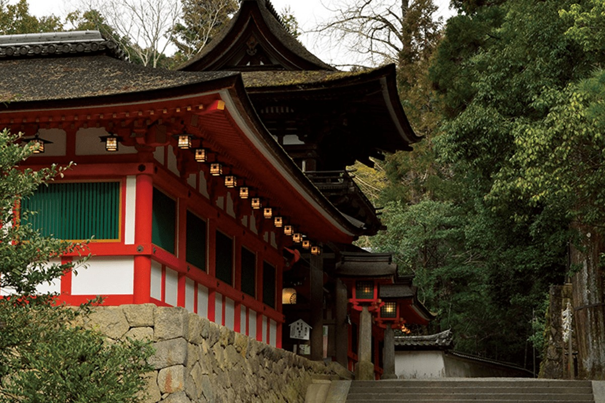
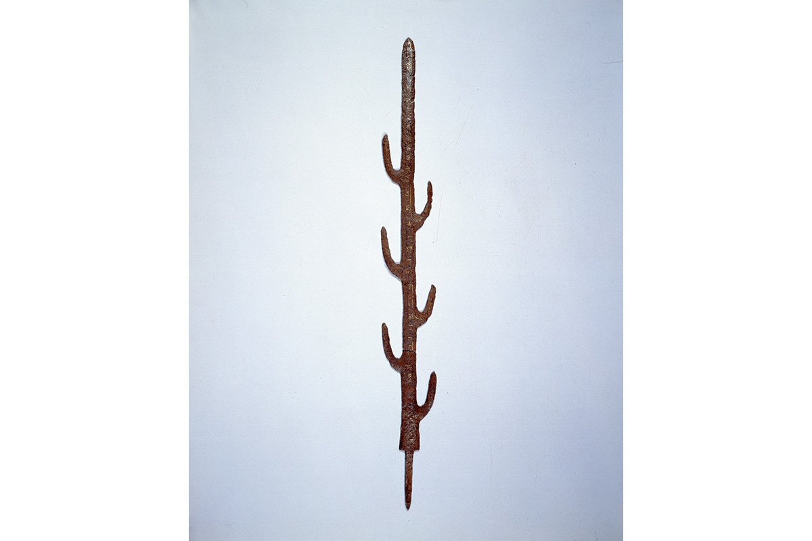

Префектура Нара · Тэнри · святилища
Исоноками-дзингу: древнейшее «дзингу» Японии и меч, найденный под запретной землёй

Среди туристических маршрутов Нары это святилище почти не встречается, хотя именно его называют древнейшим «дзингу» Японии. Здесь хранят меч, который, по преданию, спустился с неба, и более двух тысяч лет он считался легендой.
Дорога
Святилище в лесу у подножия гор
От станции Тэнри, куда приходят поезда линий Kintetsu и JR, до святилища около получаса пешком. Тэнри лежит в восточной части Нарской котловины, к югу от города Нара. Исоноками-дзингу стоит на возвышенности у западного подножия гор, и к нему ведёт дорога в гору. Территорию окружает густой вечнозелёный лес, и в этой тишине чувствуется возраст места.
Префектура Нара считается колыбелью японского государства: по преданию, здесь построил свой дворец первый император Дзимму. Самые известные храмы Нары собирают толпы, а сюда приезжают немногие. Между тем Исоноками-дзингу называют самым древним «дзингу» страны, то есть местом, с которого «дзингу» вообще начались.
Понятие
Чем «дзингу» отличается от обычного святилища
Синтоистское святилище по-японски обычно называется «дзиндзя». Слово «дзингу» встречается реже, и разница между ними есть. Иероглиф «гу» в слове «дзингу» означает здание. В древности у святилищ часто не было построек: богам поклонялись в священной роще. «Дзингу» называли те места, где для божества уже стояли здания.
В Исоноками-дзингу была сокровищница для священных реликвий, «хокура». Говорят, когда-то в ней хранилось огромное количество сокровищ, в том числе священные регалии двора Ямато, первого японского государства.
Сегодня в Японии 24 святилища со статусом «дзингу». В шести почитают предков императорского рода, в двенадцати отдельных императоров, ещё в шести божеств, тесно связанных с императорским домом.
Летопись
Почему оно древнейшее
«Кодзики», старейшая японская летопись (712 год), упоминает только два «дзингу»: Великое святилище Исэ, главное святилище страны, и Исоноками. В летописи «Нихон сёки» (720 год) их три: Исэ, Исоноками и Великое святилище Идзумо, которое сегодня известно как Идзумо-тайся.
Историю Исоноками-дзингу ведут от седьмого года правления десятого императора Судзина. По его указу священный меч Фуцу-но митама и десять священных сокровищ, которые прежде почитали во дворце, перенесли в селение Исоноками. Святилище Исэ появилось позже, при одиннадцатом императоре Суйнине, поэтому Исоноками и считают старше.

Святыни
Три божественных предмета
«Обычно никто не знает, что именно служит телом божества в святилище. А у Исоноками-дзингу оно вполне определённое», объясняет священник святилища.
Здесь почитают три предмета. Меч Фуцу-но митама, по преданию, был ниспослан с небес императору Дзимму, когда во время похода на восток тот лишился сил в горах Кумано. Десять священных сокровищ Амацусируси-токуса-но мидзу-но кандакара используют в обряде «тинкон», успокоения души.
Обычно «тинкон» понимают как обряд, который успокаивает души умерших. В Исоноками-дзингу его смысл другой: он пробуждает и укрепляет душу живого человека. Этот обряд, по преданию, начал Умасимадзи-но микото, далёкий предок рода Мононобэ, одного из самых влиятельных родов древней Японии. Его почитают здесь как божество вместе с Инисики-но микото, императором Сиракавой и Итикаваоми-но микото.
Третий предмет, меч Фуцусими-тама, принадлежал богу Сусаноо: этим мечом он убил восьмиглавого змея Ямата-но ороти. У меча есть и другие имена, например Амэ-но тоцука-но цуруги. Из хвоста убитого змея Сусаноо достал ещё один меч, Амэ-но муракумо-но цуруги. Он стал одной из трёх императорских регалий Японии и хранится в святилище Ацута в Нагое.
Открытие
Легенда, которая оказалась правдой
Больше двух тысяч лет считалось, что священные предметы зарыты в земле на территории святилища. Это место находится позади молельного зала, его окружает священная ограда, и входить туда запрещено. Недоступность и сделала его легендой.
В 1874 году главный настоятель Масатомо Кан провёл раскопки. Вместе с изогнутыми бусинами магатама, зеркалами и другими предметами нашли и меч Фуцу-но митама, и предание подтвердилось. Масатомо Кан (1824–1897) был учёным-историком и с 1873 года служил главным настоятелем святилища. Запретная земля и сегодня считается священной. Её обносит каменная ограда с остриями, похожими на клинки, и с надписью «Фуру-но ясиро», и выглядит она так же, как в старину.
Святилище Исоноками-дзингу
- Адрес
- префектура Нара, Тэнри, Фуру-тё, 384
- Телефон
- +81 743-62-0900
- Как добраться
- от станции Тэнри (Kintetsu, JR) около 30 минут пешком